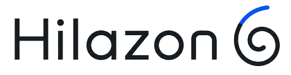

Local admin
Posts, images, settings, backups, and encrypted keys stay in IndexedDB unless you export them.

PostSnailFeatures + Q&ABrowser-native / Local processing / No backend
Write a static microblog, create a post-quantum signed fingerprint locally, verify the ZIP locally, and host the generated site on Cloudflare Pages or any static host.
Posts, images, settings, backups, and encrypted keys stay in IndexedDB unless you export them.
Every export includes SHA3-512 file hashes, ML-DSA-65 post signatures, and a signed manifest fingerprint.
The Verify tab recomputes hashes and signatures from a complete ZIP without calling a backend.
No. Sprint 2 makes no registry calls and has no backend. You choose when to export, publish, or share files.
It proves the bundle matches the manifest and publisher public key. It does not prove legal identity or factual accuracy.
Yes. Exported sites include .well-known/postsnail.json, which points to the signed manifest.
Yes. The generated files are static and work on Cloudflare Pages, GitHub Pages, Netlify, and similar static hosts.
Generated microblogs are creator-owned and do not include visible Hilazon6 or PostSnail branding.